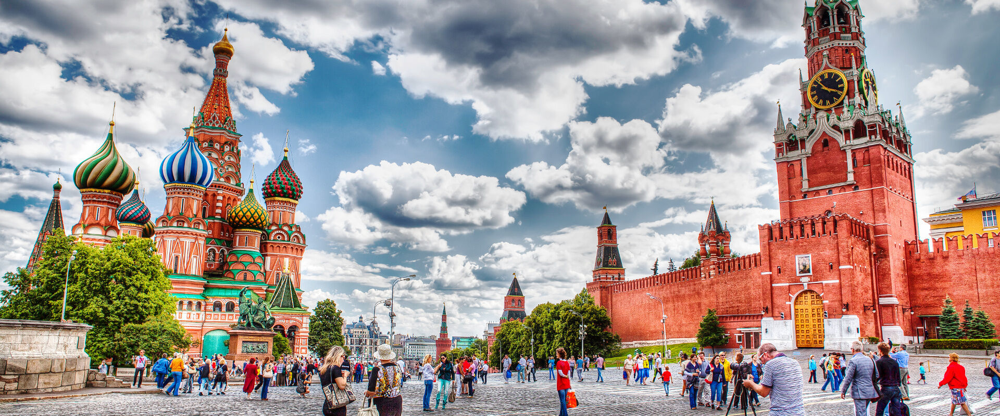

Studying in Russia can be a rewarding experience with several advantages and opportunities for international students. Here are some reasons why a person might choose to study in Russia:
1. Quality Education: Russian universities are known for their strong academic traditions and high-quality education. Many Russian universities are ranked among the top in the world, particularly in fields like mathematics, science, engineering, and medicine.
2. Diverse Range of Programs: Russia offers a wide range of academic programs and disciplines, including STEM (Science, Technology, Engineering, and Mathematics), humanities, social sciences, and the arts. This diversity allows students to pursue their interests and career goals effectively.
3. Affordability: Compared to Western countries, the cost of education in Russia is often more affordable. Tuition fees and living expenses are generally lower, and there are numerous scholarships available for international students.
4. Global Recognition: Russian degrees are globally recognized and respected. Graduates from Russian universities find opportunities for employment and further studies worldwide.
5. Language Opportunities: While many programs are taught in English, studying in Russia also provides an excellent opportunity to learn or improve your Russian language skills, which can be a valuable asset in today's global job market.
6. Cultural Richness: Russia has a rich cultural heritage with a long history of arts, literature, and scientific contributions. Studying in Russia allows you to immerse yourself in this cultural environment and gain a deeper understanding of its history and traditions.
7. Research Opportunities: Russia is at the forefront of scientific research and innovation in various fields. International students often have access to cutting-edge laboratories and research facilities, making it an ideal destination for those pursuing research-oriented programs.
8. Global Perspective: Russia's geopolitical position and its relationships with neighboring countries provide a unique perspective on global politics and international relations. This can be particularly valuable for students interested in diplomacy, international affairs, and geopolitics.
9. Hospitality and Student Support: Russian universities are known for their warm and welcoming atmosphere for international students. They typically provide support services such as orientation programs, accommodation assistance, and cultural integration activities.
10. Networking Opportunities: Studying in Russia allows you to build a global network of friends and colleagues, which can be beneficial both academically and professionally in the long run.
11. Extracurricular Activities: Russia offers a wide range of extracurricular activities, including sports, clubs, and cultural events, providing students with opportunities to explore their interests and hobbies outside of academics.
12. Travel Opportunities: Russia's vast size and diverse landscapes offer excellent travel opportunities. Students can explore the country's rich natural beauty, historical sites, and vibrant cities during their free time.
1.
Московская государственная академия
ветеринарной медицины и биотехнологии —
МВА имени К. И. Скрябина 2.
NUST MISIS-Leninskiy Prospekt 4, Moscow, RU
3.
State Transport University, Moscow, RU
1.
ITMO 1.
Stavropol State Agrarian University 1.
Kazan State Medical UniversityMoscow
St.Petersburg
Stavropol
Kazan
The Izhevsk State Medical Academy is a public higher medical school in Izhevsk, Russia. The academy is an institution of Russia in medicine and training specialists in preventive and clinical medicine.
The Kazan State Medical University is a medical university located primarily in Kazan, Tatarstan, Russia. It is composed of nine faculties. The university obtained its license on March 6, 1994, from the State Committee of the Russian Federation of Higher Education.
Kazan Federal University is a public research university located in Kazan, Russia. The university was founded in 1804 as Imperial Kazan University, which makes it the second oldest continuously existing tertiary education institution in Russia.
Omsk State Medical University is one of the oldest universities of Siberia; it was founded in 1920 as the Medical Faculty of the Siberian Institute of Veterinary Medicine and Zoology which enrolled 186 students. In 1921, West Siberian State Medical Institute was established; and Prof. N.K. IVANOV-EMIN was assigned as the first rector.
V.I. Vernadsky Crimean Federal University is a higher education institution located in Simferopol, Crimea, created in 2014 on the basis of Tavrida National V.I. Vernadsky University. Crimean Federal University is one of the best university for medical studies.
The Siberian State Medical University, SibMed is a public medical school in Tomsk, Russia. It was founded in May, 1878 by the decree of the Emperor Alexander II.
Kursk State Medical University is a Russian medical university located in Kursk, western Russia, established in 1935. In 1994 it was granted university status.
For more than 85 years our institution has been successfully training specialists for health care, scientific and pedagogical work in the sphere of professional medical and pharmaceutical education of the Russian Federation. Scientists of Bashkir State Medical University successfully represent our Republic and Russia at the international events in different fields of natural sciences.
Far Eastern Federal University (FEFU) is a unique intellectual community. Based at a campus with world-class infrastructure, our faculty provide innovative educational and research opportunities. FEFU is a gathering place for scientific communication between Russian and international experts, and is an active participant in both socio-economic and cultural development of the Russian Far East.
1. Moscow:
Moscow, the capital of Russia, offers a diverse range of educational and work opportunities. It boasts
numerous prestigious universities like Moscow State University and a thriving job market, particularly
in finance, technology, and arts. The city is a cultural hub, with world-class museums, theaters, and
galleries. Moscow's international atmosphere attracts professionals from various fields, making it a
dynamic and competitive job market.
2. Saint Petersburg:
Saint Petersburg, known for its rich cultural heritage, provides excellent education through
institutions like Saint Petersburg State University. The city offers career prospects in fields like
tourism, maritime industries, and IT. With its historical charm, it's an appealing place to work and
live for those interested in the arts and culture.
3. Ekaterinburg:
Ekaterinburg, located in the Urals, is a growing industrial and educational center. The city is home to
Ural Federal University and offers opportunities in engineering, manufacturing, and IT sectors.
Ekaterinburg's economy is on the rise, making it a promising destination for job seekers.
4. Stavropol:
Stavropol, a regional center in the south of Russia, offers decent educational institutions and job
prospects mainly in agriculture, healthcare, and education. The city's strategic location near the North
Caucasus region can be advantageous for those interested in regional development and commerce.
5. Kazan:
Kazan, the capital of Tatarstan, has a vibrant academic environment with Kazan Federal University
leading the way. The city provides opportunities in industries like petrochemicals, IT, and education.
Its unique blend of Tatar and Russian cultures adds to the city's appeal, making it a diverse and
exciting place to work and study.
Enrolling in a Russian university as an international student was a dream come true, and it was made even more magical thanks to the outstanding service provided by rovtacinternational. The highlight of their exceptional support was undoubtedly the airport pick-up service. Arriving in a foreign country can be overwhelming, but as soon as I stepped off the plane, I was greeted by a friendly rovtacinternational representative holding a placard with my name. This warm welcome instantly put me at ease. The chauffeur's professionalism and fluency in English made communication effortless.
During the ride to my accommodation, they shared fascinating insights about the city, turning a simple transfer into an enriching experience. The Agency didn't stop at the airport; they continued to assist me throughout my journey, simplifying bureaucratic processes and ensuring my smooth integration into Russian student life. For anyone embarking on a similar journey, I wholeheartedly recommend rovtacinternational for their exceptional services. They turned my study abroad dream into a reality, and I am immensely grateful.
Studying in Russia has been a cost-effective and enriching choice for me, especially when compared to the higher costs of education in some European countries. What truly stood out during my experience was the exceptional support provided by the rovtacInternational team. One of the most reassuring aspects was the admission process. They ensured that my admission was secured before I had to pay any fees, offering peace of mind in this important decision. Upon arrival in Russia, their assistance continued. From the moment I landed, I was greeted with a warm airport pick-up service, which set the tone for my journey.
rovtacinternational went the extra mile by helping me set up a bank account, obtain a metro card for convenient transportation, and even provided assistance with money exchange. This support during my initial days in Russia was invaluable, making the transition smooth and hassle-free. Overall, choosing Russia as a cost-effective study destination was a wise decision, and rovtacInternational made it all the more worthwhile with their exceptional assistance in admission, initial support, and financial matters. My experience has been enriched thanks to their dedicated services.
Choosing to pursue my Master's degree in Optics, Physics, and Biophotonics in Russia turned out to be a brilliant decision for both my academic and financial future. The stark difference in cost compared to many European countries made it an incredibly economical choice for me. What truly sets my experience apart was the exceptional support provided by rovtacInternational.
Their unwavering commitment to ensuring a seamless transition into my academic journey at ITMO University speaks volumes about their dedication to student success. In conclusion, being an NIT graduate pursuing my Master's at ITMO in Russia was made significantly more accessible, thanks to rovtacinternational's support and guidance. I am immensely grateful for their assistance in making this exciting academic adventure possible.
After spending two frustrating years trying to study in Poland without success, coming to Russia has been a breath of fresh air. My journey took a positive turn when I enrolled as an international student in Moscow, and it wouldn't have been possible without the invaluable assistance of rovtacinternational.
I did my bachelors in Bengaluru,India.
First and foremost, the hostel I reside in is not only comfortable but also surprisingly affordable, with a monthly cost of just 2500 Rupees. The facilities are on par with what you'd find in a place like New York, yet the price is astonishingly reasonable.
When it comes to food expenses, it's pleasantly comparable to the cost of living in my hometown of Kerala. I didn't have to worry about breaking the bank just to enjoy a good meal.
The people in Moscow have been incredibly friendly and welcoming. It's refreshing to be in a place where you're surrounded by warm-hearted individuals who make you feel at ease. The atmosphere here is always cool, creating a relaxed and stress-free environment.
What's more, I was fortunate to secure a job with a decent salary. Learning russian is important to get better opportunities.This added financial stability has made my study abroad experience even more rewarding, allowing me to explore and enjoy my time in Moscow to the fullest.
In retrospect, my initial setbacks in trying to go to Poland now feel like a blessing in disguise. Moscow has proven to be an incredible destination for my educational and personal growth. I couldn't be more grateful for the positive turn my journey has taken.
My journey to study abroad was initially a rollercoaster of disappointment. I spent one long years attempting to make it to Poland, but it seemed like an unattainable dream that was never meant to be. Frustration and setbacks were the norm during that time, and I began to lose hope.
My current accommodation is a true gem - it combines comfort and affordability in the heart of Moscow. Remarkably, it only sets me back 2500 Rupees each month, a fraction of what you might expect in many super cities, yet it offers facilities that rival those in more expensive places.
The grocery costs are so affordable.
To top it off, luck smiled upon me, and I landed a job in kfc,the experience is so high as me expected, but I have a faith of moving to new job after learnig Russian. This newfound financial stability has elevated my study abroad experience, giving me the freedom to explore and relish my time in Moscow to the fullest.
My fortunes changed when I decided to explore the opportunities in Russia. Moscow, to be precise, became a turning point in my life. Not only was I able to pursue my studies in the Russian language, but I also found myself in an environment that exceeded my expectations.
I am professionally a welder and plumber.My hardcore skills can be used in Russia with the proper language.I have joined for langugae coure in State University.Now I really feel that I am late to the country.
Russia in a great place to live.The west always lied and misguided us before.Europe will ruin your wealth.
I got 2 job offers - I joined as the kfc staff now,but will shift to Welder Job once basic language learned.
People are nice.Food costs in OK.Always cool,and to the top girls also so good and cheerful here.